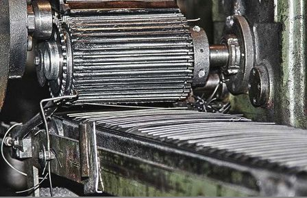
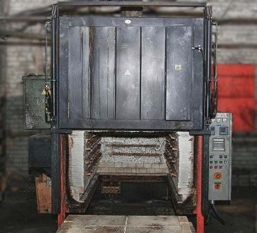
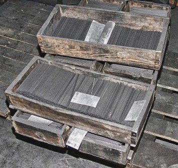

Грифель простых карандашей производится из белой глины – каолина и графита, а стержень цветных карандашей состоит из каолина с цветными пигментами. Причем сами пигменты могут быть как синтетическими, так и натуральными. Грифель, в состав которого входят натуральные компоненты, более удобен в использовании, обеспечивает мягкое нанесение, дает яркие насыщенные цвета, которые не выгорают даже под прямым воздействием солнечных лучей.
Процесс производства карандашей в древесной оболочке полностью автоматизирован и состоит из нескольких этапов: изготовление грифеля, дощечек, соединения составляющих и обработки заготовок. Прежде всего, из смеси глины с графитом производится грифель будущих карандашей. Пропорции составляющих на этапе смешивания графита и глины определяют твердость будущего грифеля. Чем больше графита добавляется в грифель, тем мягче будет его структура. Если же в грифеле преобладает каолин, карандаш будет более твердым.
Глина проходит предварительную очистку. Для этого сырье сначала измельчается в дробилках, потом смешивается с теплой водой в специальных мельницах. Глину, разведенную в воде, заливают жидким стеклом, чтобы избавиться от посторонних примесей – песка и пр. Затем в глину добавляется графит, согласно рецептуре, и связующее вещество, которое варится из крахмала.
Стержневая масса должны быть определенной температуры и влажности. Малейшее отклонение от нормы приведет к порче сырья. Например, при пересыхании смеси она станет слишком твердой, что может вызвать поломку оборудования. Тщательно вымешанное «тесто» из графита и глины попадает в винтовой пресс. Там оно формуется через вальцы с тремя различными зазорами. В результате этой процедуры масса измельчается, становится однородной, из нее удаляются пузырьки воздуха и излишняя влага. Толщина теста при каждой повторной обработке постепенно уменьшается – с 1 мм до 0,25 мм.
Затем массу пропускают через фильеру с отверстиями, после чего оно превращается в так называемую «лапшу». Она формируется в цилиндры, из которых на прессе выдавливается стержень необходимой длины и диаметра. Стержни нужно просушить. Это осуществляется в сушильных шкафах при непрерывном вращении в течение 15-16 часов. Влажность готового стержня не должна превышать 0,5%. После сушки стержни прокаливаются в специальных тиглях в печи. В процессе обжига в стержне выжигается связующее вещество, а спекшаяся глина образует каркас грифеля.
Помимо соотношения глины, на степень твердости готового карандаша также влияет температура и длительность обжига, а также компоненты, которые входят в состав так называемой жирующей ванны. Обжиг грифеля, в зависимости от желаемой градации, осуществляется при температуре от 800 до 1200 градусов Цельсия. После обжига стержни помещаются в специальную ванну для жировки. В результате этой операции поры, которые образовались в графите после выжига связующего, заполняются жиром, стеарином или воском под давлением при определенной температуре.
Иногда в качестве сырья могут использоваться пищевые и кондитерские жиры, а также дополнительные связующие вещества (например, на основе крахмала). Выбор вещества, которое используется для жировки, зависит от твердости стержня. К примеру, для карандашей с мягким грифелем используется кондитерский жир, а для твердых – воск. Стеарин для жировки применяется для изготовления грифелей промежуточной твердости (например, твердо-мягкие). Стержни больших диаметров производятся на вертикальных прессах кладки.
Получение стержней Печь для обжига Готовая продукция
Процесс изготовления деревянного корпуса для карандаша состоит из нескольких операций. Прежде всего, потребуются готовые бруски древесины. Они торцуются по длине будущих карандашей с припусками на механическую обработку и усушку. Деревянные заготовки распиливаются на отдельные дощечки на многопильном станке и пропитываются парафином в автоклавах для улучшения механических свойств готового изделия. Толщина каждой дощечки составляет половину толщины готового изделия. При паровой обработке из дощечек удаляются смолы, а древесина приобретает светло-коричневый цвет с розовым оттенком.
После чего дощечки просушиваются в «колодцах», куда они складываются при помощи станка. Используемый способ укладки позволяет увеличить площадь дощечки, которая соприкасается с горячим паром. С одной стороны, это оптимизирует процесс производства, а с другой – позволяет максимально удалить влагу из сырья. «Колодцы» переставляются в сушильные комнаты, где они находятся на протяжении 72 часов. Затем дощечки вынимаются и сортируются. Во время сортировки удаляется брак (расколовшиеся заготовки, неправильно распиленные дощечки и т. д.). Пропитанные различными составами и высушенные дощечки сортируются и калибруются по размерам.
На каждой дощечке делаются канавки или желобки для грифеля, а затем на нее ровным слоем наносится клей ПВА. После чего выполняется сборка карандаша: в одну из двух дощечек вкладывается грифель, а затем он накрывается второй дощечкой. При этом сам стержень не приклеивается к доске, а удерживается за счет натяга «оболочки».
Так как диаметр стержня немного больше диаметра канавки, то большое значение имеет правильное сжатие дощечки в специальном устройстве – струбцине, где осуществляется склейка карандашей. Согласно технологии производства, для карандашей определенного размера и типа используется свой показатель давления для запрессовки. Отклонение от рекомендуемых показателей приводит к большому количеству брака: карандаши просто ломаются под прессом.
Получившиеся блоки поступают на фрезерно-пропускную линию, где они разделяются на карандаши при помощи ножей. Вид ножа определяет форму будущего карандаша – граненую, овальную или круглую. Затем почти готовые карандаши отправляются на сортировку по конвейерному транспортеру. Сортировщики проверяют каждый карандаш, выявляя и изымая бракованную продукцию.
Полученные в результате опрессовки заготовки распиливаются по длине карандаша, выравниваются, шлифуются, грунтуются и покрываются краской и лаком. Поверхность карандаша вскрывается краской и лаком методом протяжки (экструзии), а его торцы – окунанием. В первом случае карандаш пропускается через грунтовочный аппарат. Сначала он движется в одну сторону при одновременном нанесении лака или краски, а потом на другом конце конвейера переворачивается и возвращается обратно. Это помогает создать ровное и равномерное покрытие.
Карандаши темных цветов покрываются краской минимум в пять слоев, а лаком – в четыре. В светлые цвета карандаш окрашивается минимум в семь слоев краски и четыре лака. Но в идеале, чтобы поверхность карандаша была ровной, без подтеков и «заусениц», общее количество слоев лака должно быть не менее семи-восьми (чем больше слоев, тем дороже готовое изделие). Максимальное количество слоев – 18.
Для окрашивания торцов карандашей применяется так называемая окунальная машина. С ее помощью рама с карандашами аккуратно опускается в бак с краской. Но в некоторых случаях краска и лак не требуются. Например, карандаши с корпусом из кедра поступают в продажу без дополнительной обработки древесины. Считается, что сама фактура дерева достаточно красива и не требует покраски и лакировки. Обозначение твердости грифеля наносится на карандаш путем ударного горячего тиснения с использованием цветной фольгированной ленты.